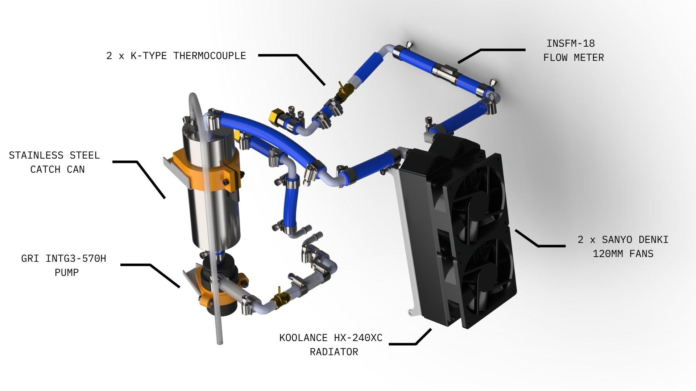
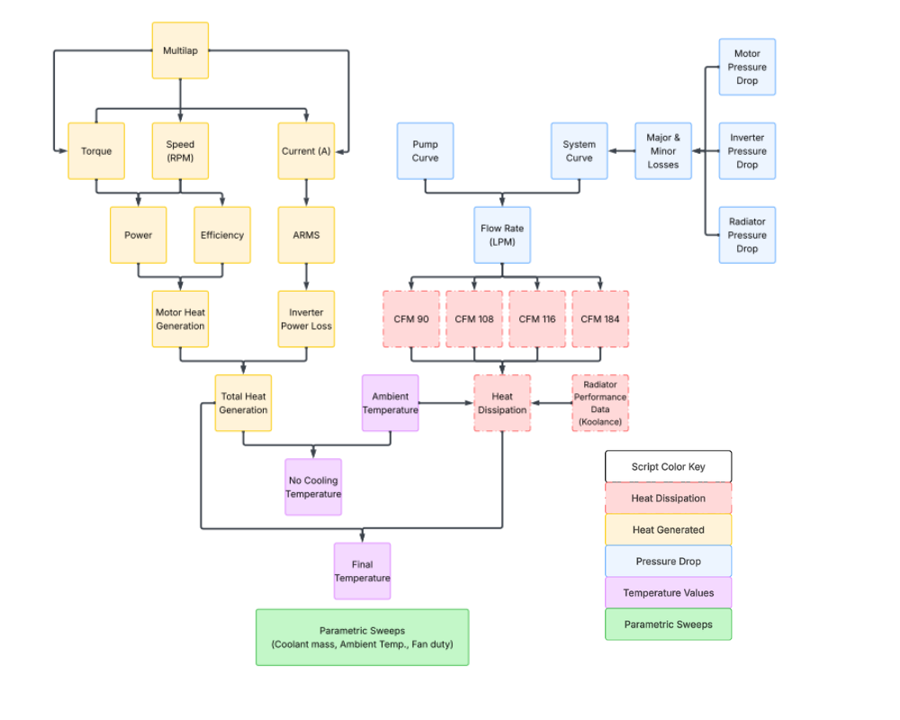
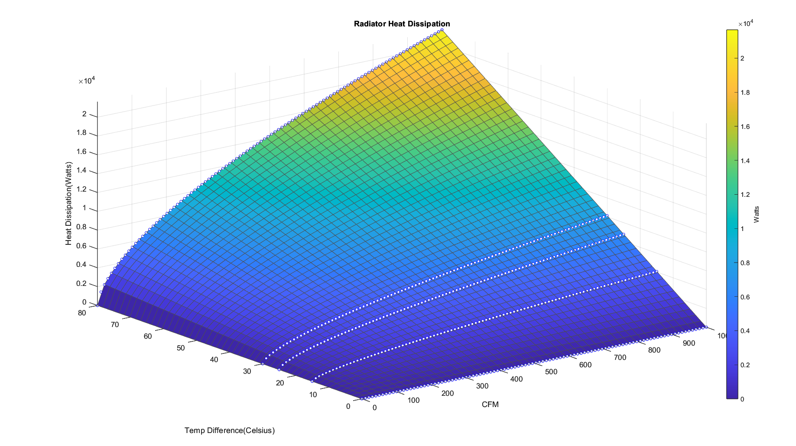
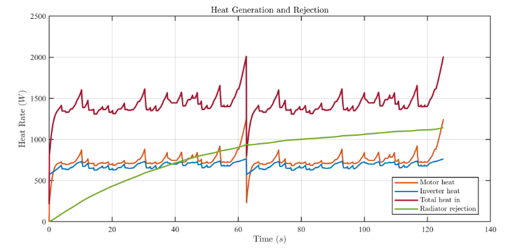
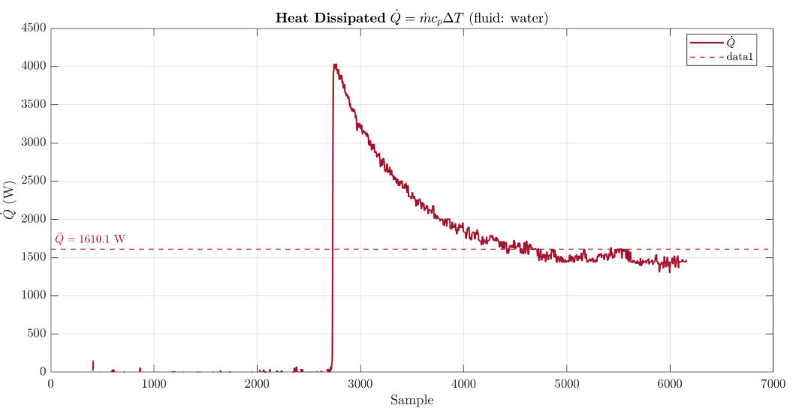

Mechanical Design / Thermal Modeling
FSAE Cooling System
Built a MATLAB-based thermal model of the Formula SAE car's radiator and validated the model to within 13% of physical test data.

Project Objective
Going into the 2026 season, the cooling systems subteam had two goals. First, make a validated thermal model in order to select an appropriate radiator. Previous years relied on napkin calculations, which led to conservative design assumptions and a badly oversized HX-360XC radiator. Second, simplify the cooling loop. Earlier years ran a parallel radiator configuration with complex plumbing that was difficult to fill, bleed, and service, so the 2026 design moved to a simple dual-pass loop with an exposed, easily serviceable radiator. Any new radiator selection still had to reject enough heat to keep motor and inverter coolant temperatures within their limits across a full lap, while cutting the weight and packaging volume of the previous design.

My Contribution
My piece of the cooling system was the radiator heat-dissipation model. I converted the Koolance HX-240XC's manufacturer performance curves into a continuous MATLAB model that predicts heat rejection as a function of airflow (CFM) and the temperature difference between the coolant and ambient air (Celsius). This model became the "Heat Dissipation" block inside the team's larger cooling-system simulation, which also tracked motor and inverter heat generation, pump/system flow rate, and pressure drop to produce a steady-state and lap-by-lap coolant temperature prediction.

Engineering Approach
The radiator's datasheet only published heat rejection curves at two temperature differences (ΔT = 15°C and 25°C), each measured over a narrow coolant flowrate range of roughly 1.7–6.8 L/min. To convert this data into a useful model, I took the following steps:
1) Digitized the manufacturer curves and fit a power-law curve (Q = a·x^b + c) to each ΔT slice using MATLAB's Curve Fitting Toolbox, extending the predictions out to flow rates beyond what was actually tested.
2) Added a ΔT = 0°C boundary (zero heat rejection) and linearly extrapolated a ΔT = 80°C case from the ΔT = 25°C slope, since heat rejection scales roughly linearly with temperature difference for a fixed airflow.
3) Used linear interpolation across all four temperature slices to stitch the discrete curves into one continuous 3-D surface relating CFM, ΔT, and heat rejection (Watts) over a 0–1000 CFM range.
4) Determined the airflow the car would actually see through the radiator core: using the vehicle's maximum recorded speed (97 km/h) and the radiator's face area, I calculated a theoretical maximum of 822 CFM, which set the upper bound the surface needed to remain valid across.
5) Fed that surface into the shared thermal model, where flow rate and ambient/coolant ΔT (computed elsewhere in the model from motor and inverter heat loads) were used to look up the correct instantaneous heat-rejection value, rather than assuming a single constant radiator performance number for the whole lap.

Results
The finished model produces a continuous heat rejection surface valid from 0–1000 CFM and 0–80°C ΔT, peaking around 21,000 W of rejection at the highest airflow and temperature difference. This let the team size the radiator against actual predicted operating conditions instead of a worst-case guess, which is what allowed a switch from the oversized HX-360XC to the smaller, lighter HX-240XC without giving up cooling margin.
The model also held up against physical testing: the team's benchtop radiator rig measured a steady-state heat rejection of 1,610 W at roughly 298 CFM and ΔT = 18°C, while the model predicted 1,850 W at the same operating point.The 13% difference is most likely from real world fan performance losses that aren't captured in the idealized manufacturer datasheet curves. Since the physical result exceeded the thermal model's average predicted lap heat load of 1,505 W, it confirmed the radiator had adequate margin for race conditions even accounting for that gap.

What I Learned
The biggest lesson was how easily an extrapolation can quietly outrun its data — the manufacturer curves only covered flow rates up to about 6.8 L/min, so every prediction above that was riding on the shape of a fitted curve rather than a measurement, which is exactly where I'd want physical validation before trusting the number. I also got a much better feel for the tradeoff between a quick point calculation and a full parametric model: the extra time spent building a CFM-and-ΔT surface instead of a single "worst case" wattage number is what actually let us right-size the radiator instead of over-building it again. If I did this again, I'd push to get bench-test data earlier in the design cycle so the 13% real-world gap could inform the radiator selection itself, not just confirm it after the fact.